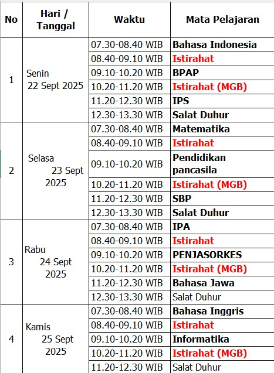
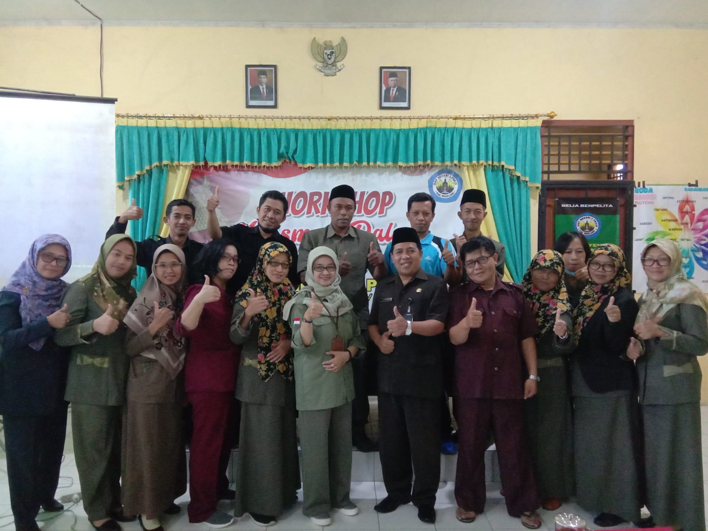
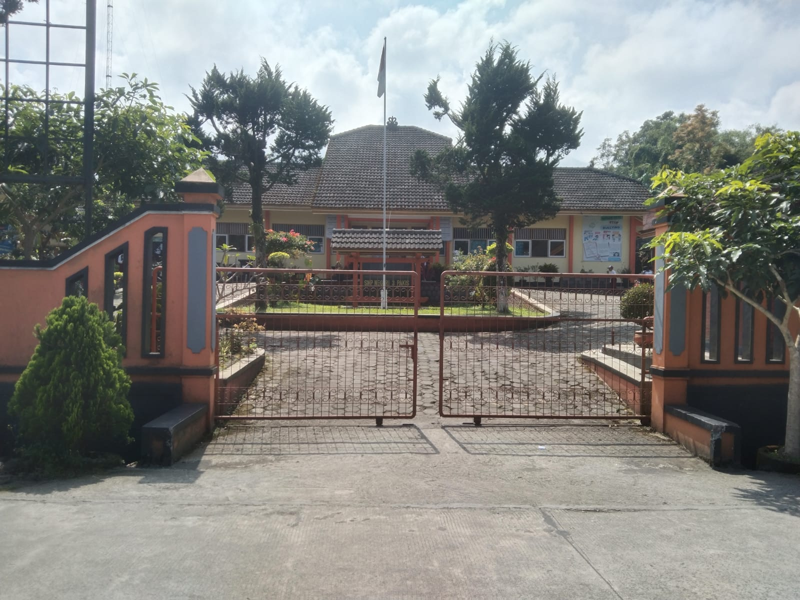
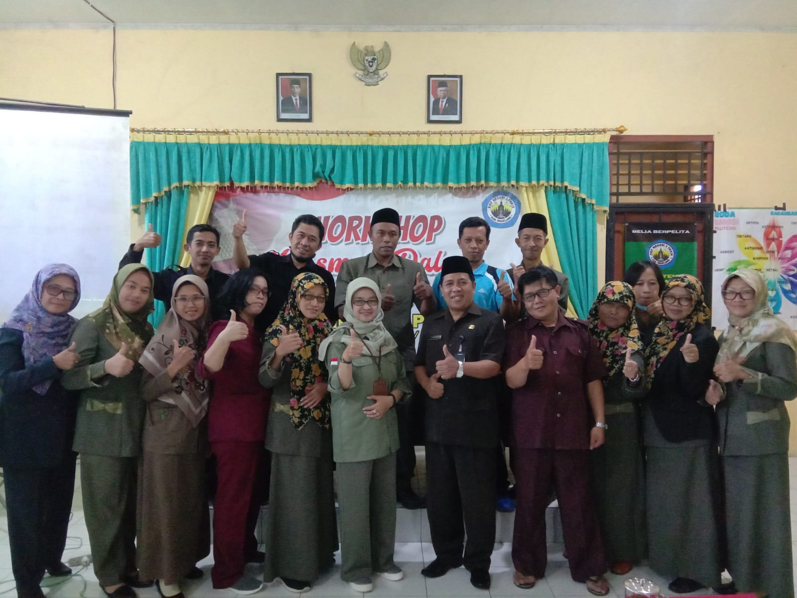
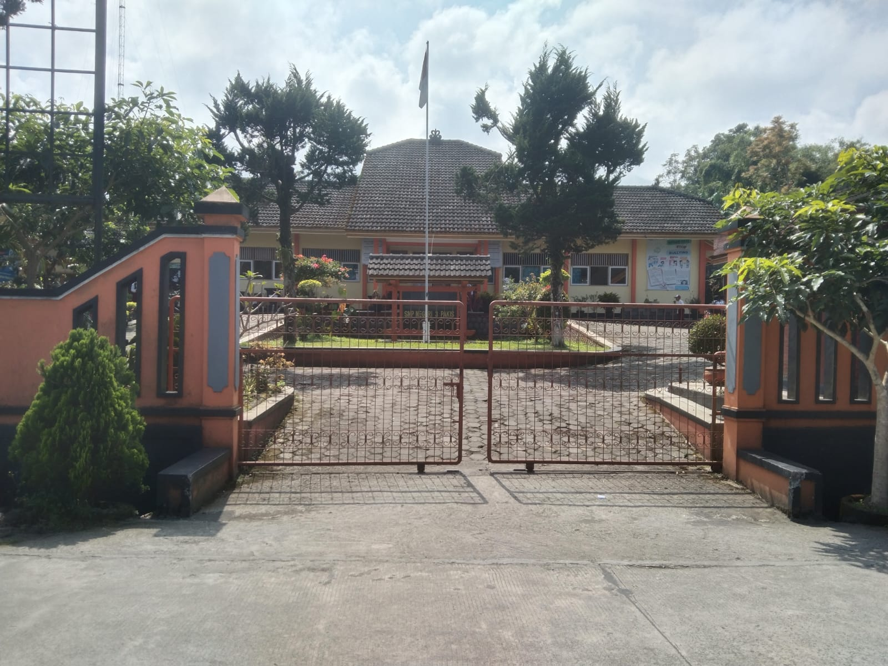
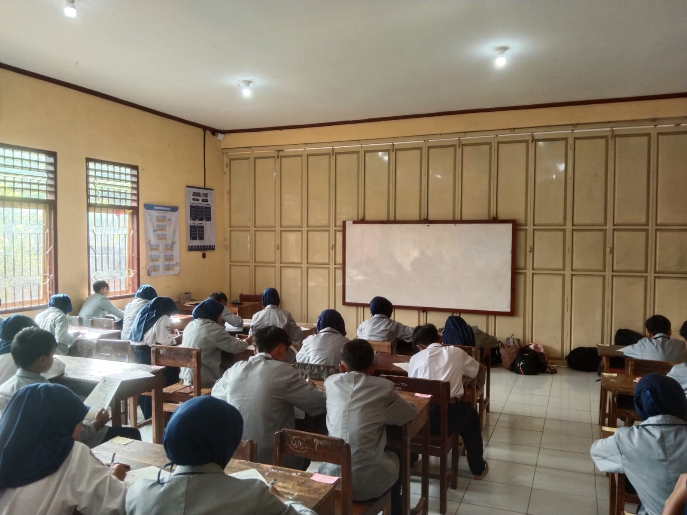
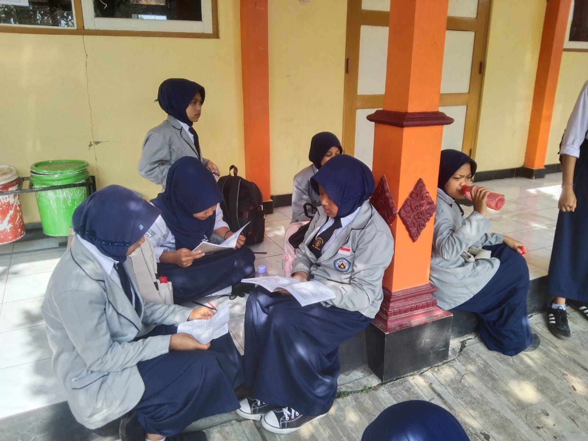

Asesmen Sumatif Bersama Tengah Semester Gasal Tahun Pelajaran 2025/2026
Siap-siap Hadapi ASBTS Gasal, Yuk Pahami Format Barunya!
Halo, teman-teman SMP Negeri 3 Pakis! Tidak terasa kita sudah sampai di pertengahan semester ganjil. Itu artinya, Asesmen Sumatif Bersama Tengah Semester (ASBTS) akan segera dimulai. Catat tanggalnya ya, ASBTS akan dilaksanakan mulai hari Senin, 22 September 2025, dan akan diikuti oleh seluruh siswa kelas 7, 8, dan 9. Asesmen ini sangat penting, lho, karena nilainya akan menjadi salah satu komponen utama dalam penilaian rapor kalian nanti. Jadi, persiapkan diri kalian sebaik mungkin ya!
Ada yang berbeda pada ASBTS tahun pelajaran 2025/2026 ini, lho. Kalau tahun-tahun sebelumnya kalian terbiasa mengerjakan soal pilihan ganda, pilihan ganda kompleks, isian singkat, dan uraian, maka kali ini siap-siap untuk tantangan baru! Seluruh soal ASBTS akan berbentuk esai. 📝 Kenapa diganti? Tujuannya keren banget, yaitu untuk melatih kita semua agar bisa berpikir lebih dalam dan kritis. Jadi, bukan sekadar memilih jawaban yang sudah ada, tapi kalian diajak untuk menjelaskan pemahaman kalian dengan kata-kata sendiri.
Ada yang berbeda pada ASBTS tahun pelajaran 2025/2026 ini, lho. Kalau tahun-tahun sebelumnya kalian terbiasa mengerjakan soal pilihan ganda, pilihan ganda kompleks, isian singkat, dan uraian, maka kali ini siap-siap untuk tantangan baru! Seluruh soal ASBTS akan berbentuk esai. 📝 Kenapa diganti? Tujuannya keren banget, yaitu untuk melatih kita semua agar bisa berpikir lebih dalam dan kritis. Jadi, bukan sekadar memilih jawaban yang sudah ada, tapi kalian diajak untuk menjelaskan pemahaman kalian dengan kata-kata sendiri.
- Agar tidak salah jadwal, yuk, simak baik-baik jadwal lengkap ASBTS di bawah ini. Setiap mata pelajaran akan diberi waktu pengerjaan selama 70 menit.
- Senin: Bahasa Indonesia, Bimbingan dan Penyuluhan Agama dan Pribadi (BPAP), dan Ilmu Pengetahuan Sosial (IPS).
- Selasa: Matematika, Pendidikan Pancasila, dan Seni Budaya.
- Rabu: Ilmu Pengetahuan Alam (IPA), Pendidikan Jasmani, Olahraga, dan Kesehatan (PJOK), dan Bahasa Jawa.
- Kamis: Bahasa Inggris dan Informatika.
JADWAL

Foto Kegiatan
Panitia
 



Peserta



Saat Belajar
RENCANA KEGIATAN
Pahami agendanya jangan sampai ketinggalan
Pelaksanaan ASBTS
Senin, 22 September sd Kamis, 22 September 2025
Remidi
Senin, 29 September 2025 sd Selasa 30 September 2025
Out Bond
Rabu 1 Oktober 2025 sd Jumat 3 Oktober 2025
Penerimaan Hasil
Jumat, 3 Oktober 2025